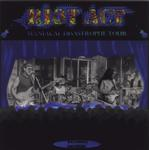

Home Artist links Label link

| Artist: | Riot Act |
| Title: | Maniacal Disastrophe Tour |
| Label: | Neurosis Records |
| Length(s): | 57 minutes |
| Year(s) of release: | 2000 |
| Month of review: | 07/2000 |
Line up
Rick Ray - guitar, guitar synth, vocals
Jack Ambrose - bass, vocals
John Cek - drums, vocals
with
Rick Schultz on clarinet
Tracks
| 1) | Red Tape | 3.08
|
| 2) | She Could Win An Award | 3.38
|
| 3) | Bonnie The Clyde | 3.14
|
| 4) | Thinking About You | 5.50
|
| 5) | The K.G.B. Is After Me | 3.17
|
| 6) | Just A Boy | 4.31
|
| 7) | Giver Of Life | 5.33
|
| 8) | Good To Be There | 3.22
|
| 9) | They're Only Words | 5.17
|
| 10) | One More Line | 3.53
|
| 11) | Dial Nine | 3.37
|
| 12) | A Time In Space | 4.26
|
| 13) | State Of Decay | 5.21
|
| 14) | ?? | 2.00
|
Summary
After the rerelease of Live At Suma on Neurosis Records the band started
to get together again to record a new album. This album was not recorded
live before an audience.
The music
In addition to the solo work of Rick Ray (quite a few discs) Ray also
plays in a band with a live drummer and bass player. Red Tape is, if you
know Ray's music, rather typical: poppy but noisy, guitar dominated with the
somewhat hoarse vocals of Ray. He doesn't have a very nice voice, but with
this kind of rock, I guess it is not out of place. The music is not terribly
complex and I wouldn't call it progressive, but the drums are live this time
and that does make a difference. The production is still lo-fi.
She Could Win An Award has a catchy chorus and for the most part rather
melodic and relaxed guitar playing. Quite nice in fact. Also, the vocals on
this song are by another of the members, probably Ambrose, since he happened
to write it with Ray and this is definitely not Ray singing.
Opening with puyrotechnic guitar playing (remember Van Halens Eruption?),
Bonnie The Clyde is a plodding piece with almost rap like vocals. The track is
quite a groovy one with some good rolls on the drums. Taking it more relaxed
now with Thinking About You, with slightly less than 6 minutes the longest
track on this album. Tortured sounding vocals, and easy going playing with
a strong focus on bluesy guitar solo's.
The lyrics of Rick Ray are often about politics, freedom and control by
bodies of government. The K.G.B. Is After Me as well as the opener Red Tape
fall into this category. This is rather a Hendrixian piece with Ray back
at the mike (the vocals remind only of Ray, not of Hendrix; this also holds
for the vocal lines). Just A Boy continues the line and I like the intermezzo
with the drumming and guitar playing. Quite some busy playing here.
It seems to end with helicopter sounds, but slow and low. In the middle of the
disc we find Giver Of Life. I think we have Ambrose singing here again at times
quite clear and loud. A rather weird track, relaxed like Thinking About You.
The chorus like part with echoes is quite inventive and the bass playing here
is also nicely pronounced. The guitar comes into it more later on, but still
playing along the lines set by the vocalist. One of the better tracks.
Good To Be Here is a bit too happy and simple for me. Bouncy and accessible.
They're Only Words is a memorable one, with an especially a memorable
opening. In fact, the melody is auite alright and also the moods are well
played out. In a way I'm reminded here of the ballads of the Scorpions (but
not the slick ones). The chords are quite subtle here during the singing.
Very good in the first part, but I was hoping to hear something extra in the
final part. Rick Schultz plays clarinet on One More Line about
coke addiction. The clarinet is an interesting addition here interjecting
some rather unfamiliar sounds into this pumping track. Dial Nine opens
as a heavy metal track and it turns out to be quite heavy throughout.
Acoustic guitar on the follow up, nicely melodic, but a bit noisy sounding.
It continues moodily and relaxed. This time I guess Cek is singing.
The album closes with the rough and ready State Of Decay. The guitar playing
is quite melodic at times, but the vocals are a bit too sharp and rough
for my liking. The guitar playing dominates though.
The bonus track is some acoustic meandering to wind down quietly.
The music is on the whole quite memorable, given that I could easily recognize
many of the songs. I'm sure this is not just a consequence of me listening
to many of Ray's discs at this moment.
Conclusion
Underground bluesy guitarrock, but little or nothing "progressive" about it.
It does seem to me that the songs on this one are more memorable than on most
of Ray's solo releases. Also the drummer is quite good, he does get a groove
going and Ray is present as always to deliver the licks, riffs and solo's.
The vocals of Ray are like on the solo releases not a strong feature. There's
something about them that is alive, but they can not be considered beautiful.
I tend to prefer the other guys' singing and also those tracks tend to stand
out as tracks also (They're Only Words, Giver Of Life, She Could Win An Award).
© Jurriaan Hage